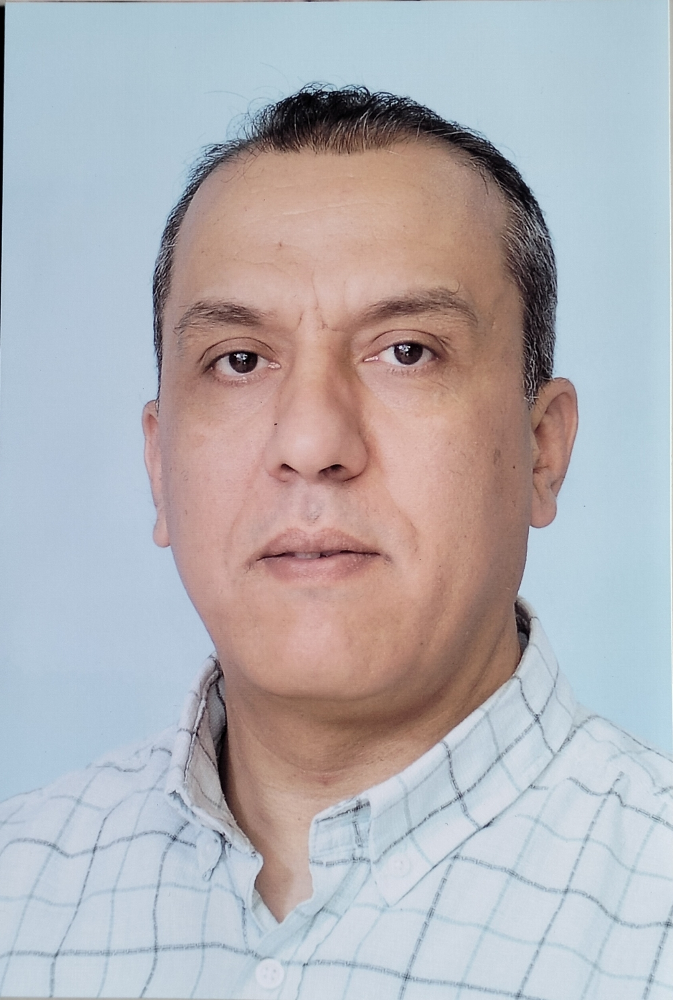
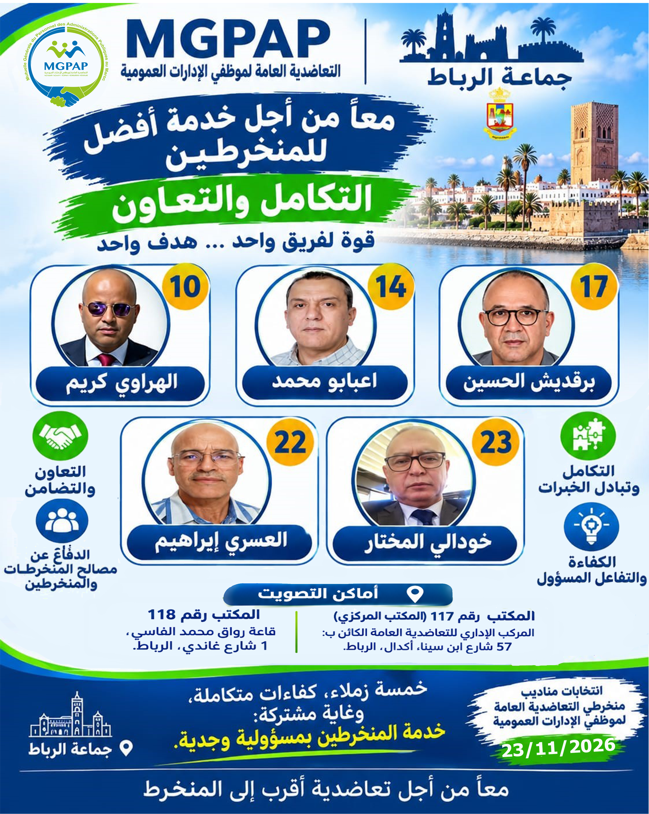
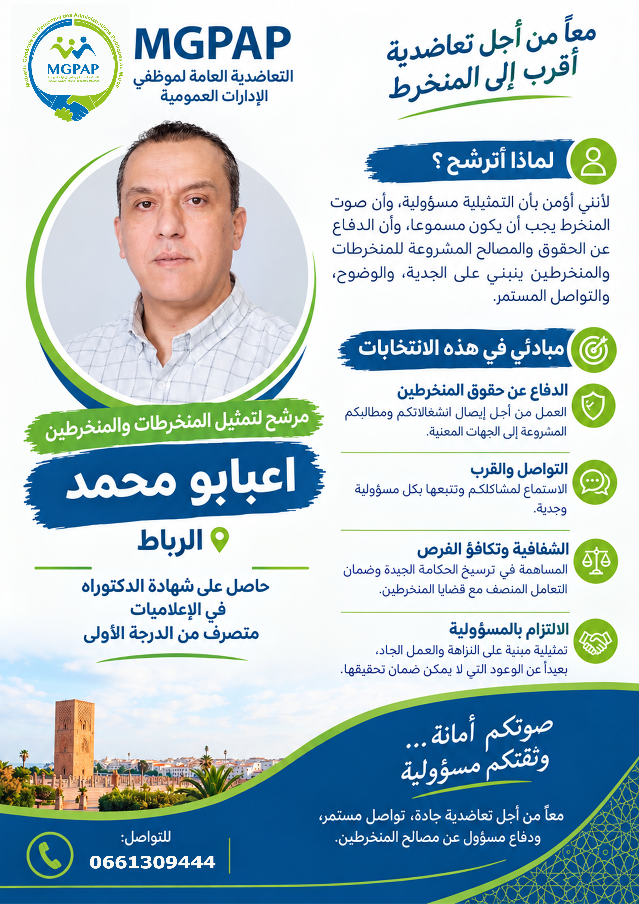

قنوات واضحة لاستقبال الأسئلة والانشغالات.
انتخابات مندوبي المنخرطين
الإنصات أولاً… والخدمة مسؤولية
محمد اعبابو
مرشح لمهمة مندوب منخرطي التعاضدية العامة
14
رقم الترتيب الانتخابي
تصور عملي يجعل التواصل أقرب، والمعلومة أوضح، ومواكبة انشغالات المنخرطين أكثر انتظاماً.
مبادرة انتخابية شخصية مستقلة، وليست موقعاً رسمياً للتعاضدية.

م ا
محمد اعبابو
المرشح رقم 14
محمد اعبابو
الترتيب رقم 14
الإنصات
فهم الانشغالات
التوجيه
معلومة واضحة
المواكبة
متابعة مسؤولة
الشفافية
التزام واقعي
01 / من أنا؟
مندوب قريب من المنخرط
المهمة ليست مجرد صفة، بل مسؤولية في الإنصات والتواصل ونقل الانشغالات بوضوح.
الفكرة التي أنطلق منها
المنخرط خاصو يلقى من يسمعو، يشرح ليه المعلومة، ويوجهو للمسار الصحيح.
ماشي كل ملف كيتحل بكلمة، ولكن كل ملف يستحق جواباً واضحاً ومتابعة مسؤولة.
الهدف هو بناء علاقة تواصل مستمرة بين المندوب والمنخرطين، قائمة على الثقة والوضوح والاحترام.
الرجوع إلى المساطر والمصادر الرسمية.
الإنصات دون تمييز واحترام سرية المعطيات.
02 / تصور العمل
برنامج عملي… والتزام واقعي
مقترحات قابلة للتفعيل في حدود مهام وصلاحيات المندوب.
فضاء للإنصات
استقبال انشغالات المنخرطين وتنظيمها حسب الموضوع والأولوية.
دليل مبسط للخدمات
تجميع روابط الخدمات والوثائق والمعلومات الرسمية في مكان واحد.
التوجيه والتتبع
مساعدة المنخرط على فهم المسار الإداري والتأكد من الوثائق المطلوبة.
تواصل وإخبار
تقاسم المستجدات والتنبيهات المفيدة بلغة واضحة.
نقل الانشغالات
تجميع القضايا المتكررة وعرضها على الجهات المعنية.
استمرارية المبادرة
الحرص على استمرار المشروع، حتى إذا لم أنل ثقتكم، من خلال تسليمه لزميل يتولى المهمة بعد الاتفاق معه.
03 / دليل الخدمات
المعلومة الرسمية في متناولك
روابط للتعرف على خدمات التعاضدية. المرجع النهائي هو الموقع الرسمي والمصالح المختصة.
الانخراط والوضعية الإدارية
معلومات وخدمات المنخرطين
زيارة المصدر ↗
ملف التقاعد
الوثائق والمساطر المتعلقة بالتقاعد
زيارة المصدر ↗
ملفات الوفاة
معلومات حول ملفات التعويض
زيارة المصدر ↗
المنحة المدرسية
الشروط والمعلومات الخاصة بالمنحة
زيارة المصدر ↗
مراكز التشخيص
الخدمات الطبية والتشخيصية
زيارة المصدر ↗
طب الأسنان
معلومات المراكز والخدمات
زيارة المصدر ↗
خدمات البصريات
معلومات الخدمات والمراكز
زيارة المصدر ↗
مراكز أمل
التعرف على الخدمات المتاحة
زيارة المصدر ↗
المصدر الرسمي للمعلومات
زيارة موقع التعاضدية ↗
للاطلاع على آخر المستجدات والخدمات والمساطر.
04 / فضاء الحملة
الحملة بالصورة والكلمة
تابع رسائل الحملة، اطلع على المنشورات وشاركها مع زملائك.
01 — منشورات الحملة
فلايرات الحملة
منشورات تعريفية وبرنامج العمل.

14
محمد اعبابو
المرشح رقم 14
الفلاير الأول — صورة مؤقتة
المنشور الأول
تحميل ↓


صوت القرب
الإنصات أولاً
المرشح رقم 14
الفلاير الثاني — صورة مؤقتة
المنشور الثاني
تحميل ↓

02 — فيديوهات الحملة
رسائل الحملة على YouTube
شاهد الفيديوهات وشاركها.
05 / منهجية المواكبة
من السؤال إلى التوجيه
مسار يساعد على تنظيم التواصل ولا يعوض المساطر الرسمية.
شرح الاستفسار والانشغال.
فهم نوع الطلب والجهة المعنية.
الإحالة إلى المعلومة والمصدر الرسمي.
تتبع الاستفسار في حدود الاختصاص.
توضيح مهم حول صلاحيات المندوب
المندوب لا يعوض الإدارة المختصة، ولا يضمن قبول الملفات أو آجال معالجتها أو تغيير القرارات. دوره هو الإنصات والتوجيه ونقل الانشغالات في إطار الاختصاص.
06 / أسئلة متكررة
أسئلة قبل التواصل
واش هاد الموقع رسمي تابع للتعاضدية؟
لا. هذه مبادرة شخصية مستقلة مرتبطة بالترشح، ولا تمثل التعاضدية ولا تتحدث باسمها.
واش المعلومات المنشورة مساطر رسمية؟
الموقع يوجه إلى الموقع الرسمي للتعاضدية. المرجع النهائي هو التعاضدية ومصالحها المختصة.
واش المندوب يقدر يضمن حل الملف؟
لا يمكن تقديم هذا الضمان. الدور المقترح هو المساعدة في فهم المسار والتوجيه والمتابعة في حدود الاختصاص.
واش نقدر نصيفط وثائق شخصية؟
لا ترسل تقارير طبية أو أرقام ملفات أو نسخ بطائق ووثائق شخصية عبر قنوات عامة.
شنو إلا ما تمش انتخاب صاحب المبادرة؟
صاحب المبادرة مستعد، بعد الاتفاق، لتسليم المشروع لزميل يتولى المهمة حتى تستمر الفكرة.
الإنصات بداية كل حل
باب التواصل مفتوح للاستفسارات والمقترحات والانشغالات المتعلقة بخدمات المنخرطين.
زيارة بوابة التواصل السابقة ↗